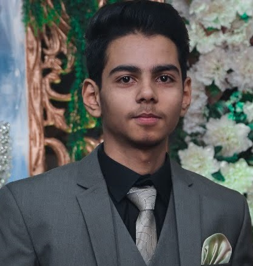

Muhammad Shariq Faisal
Web-Developer

Summary:
"Experienced professional with a background in customer support, adept in efficiently resolving customer issues and inquiries. Proficient Data Entry Operator with a strong attention to detail and accuracy. Have some skill in Programming with a passion for developing and implementing solutions to streamline processes and improve productivity.
Education:
- Lahore Garrison University (Bachelor of Science in Computer Science)
- Riphah International University (Associate degree in Computer Science)
- Punjab College (Intermediate in Computer Science - ICS)
Professional Experience:
- Innoweb Solutions working as a medical Biller for a USA based company from 2020 - continue
- Sea Falcon Logistics working as a chat support agent from 2018 - 2020
Skills:
- Data Accuracy
- Data Entry Expert
- Customer Service
- Time Management
- Communication
- Problem-Solving
- Development
Certifications:
- Certification in MS Office
Languages:
Contact Me
My Hobbies